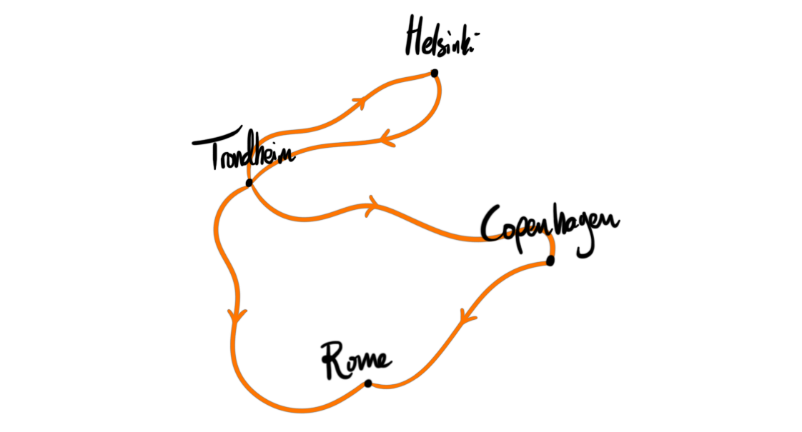
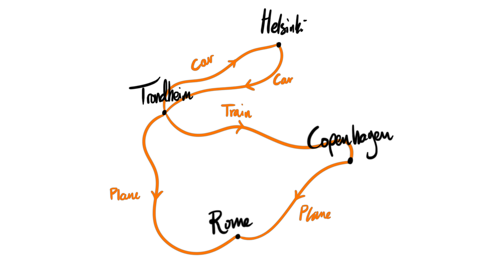
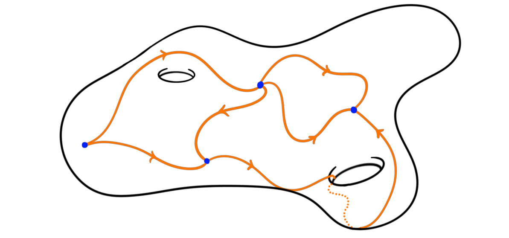
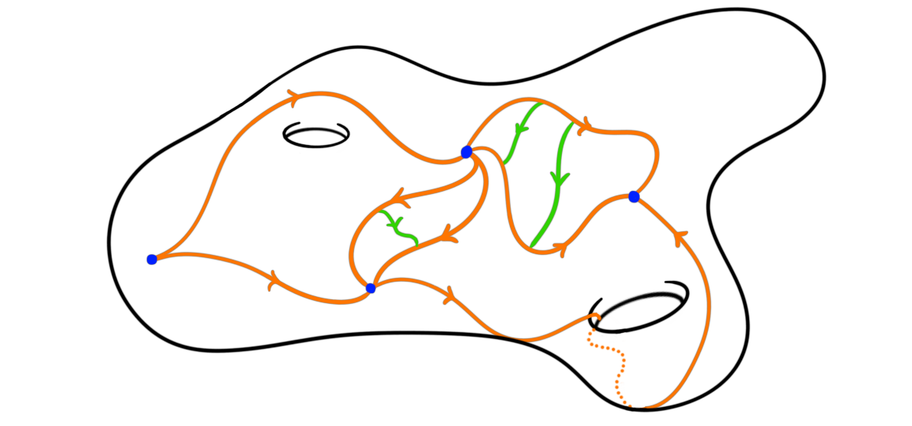
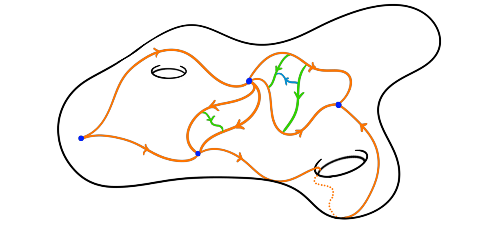

Disclaimer
Before starting I must say that this post will not be like the other ones so far on this blog. It will be much more conceptual, non-rigorous and “essay-ish”. This is because I want to try something new — writing less “mathy”. This means that you have to take the information presented with a grain of salt as it is not truly precise — take it to be more like intuition. The goal is to explain a complicated mathematical gadget using only a single analogy, and then to explain what the analogy is at the end. It might end up to be a failure, but it might also end up being interesting..
The travel ledger
Imagine a world where we can once again travel. Hopefully, this world will come into fruition soon enough, as people are getting vaccinated and the world is slowly returning to normal. When we get to travel I think many of us will want to better reccord where we are traveling, as we now understand better how important these memories are to us. Maybe we also want to record everywhere we go, not only the longer vacations and bigger travels. To be able to record all information about all the places we go, I propose we all use a special travel ledger to write down all the information. I won’t yet tell you what mathematical object this travel ledger will be, or rather what it will represent, but we will do a reveal at the end.
Ok, what sort of information should be stored in such a ledger? And what sort of information do we actually care about? At the bare minimum we should record where we are. This means that we can record all the places we have been in a nice systematic way. If I find my self in my home town Trondheim and travel to Rome, then I can record both Trondheim and Rome in my ledger. This will turn into a list of all the places we have visited, but not anything more.
A thing I would like to record is how I got somewhere, or rather which path I took to get from one place to another. Even though my destination is Rome, it would be interesting to know that I went through Copenhagen on my way there. A feature of this is that we can add paths. We can start in Trondheim, travel to Copenhagen and then travel from Copenhagen to Rome. If we only cared about the path we took then this combined path would not give us any new insight into our travels. Intuitively, traveling to Rome through Copenhagen is the same as traveling to Copenhagen and then traveling to Rome. Hence, in order to distinguish these two paths we need more information.

One thing we could add is which mode of transportation we used to get somewhere. If I were going from Trondheim to Rome, then traveling by plane or by train would make the most sense, but if I was taking a brake from work to travel around the block, I would prefer walking or bicycling as my mode of transportation. This also allows us a single characteristic of distinguishing paths between spaces. If I look in my ledger and see two trips from Trondheim to Rome, both traveling through Copenhagen I would like to remember which is which. If I have written in the ledger that one of the trips was by plane and the other by train, then I would have some way of distinguishing them, and know which trip is which. This also allows us to distinguish between going first to Copenhagen and then to Rome, and to Rome through Copenhagen, but only if we switch mode of transportation.

Another way to distinguish trips is by date. If I have two trips from Trondheim to Rome, I could also distinguish them by when the trips were taken. Perhaps I visited Rome once in my childhood, and again later in life? This also gives us another way of distinguishing paths, even if they both have the same mode of transportation. If I first went to Copenhagen and then to Rome, I would have spent some time in Copenhagen, which means that the trip from Copenhagen to Rome was done on another date. So this method is also good for distinguishing between connected travels and simply going through on our way somewhere.
These types of information is good to have in order to distinguish loinger trips, but fail a bit when trying to distinguish shorter ones. For example, if I were to take two brakes in a day, walking around the block each time, I would have no way of distinguishing them by the information recorded in the ledger thus far. So, in order to distinguish such trips we need more information.
We could of course add more specific time signatures, like hours and minutes, but this is not the only ones. We could add information about the temperature; about how long the trip lasted; about what we wore; about who we met on the trip; who we went with, et cetera. In theory we have infinitely many different characteristics we could write down, each of them allowing us a different view on the path we took. Maybe we met an old friend on the bus. Maybe we met a cute dog during our walk. It’s up to us to decide which information we write down in the ledger.
The point is, given an infinitely precise ledger, we can write down any possible travel path, and distinguish any two “almost equal” paths by using more and more refined information. This allows us to know which travel is which by 100% certainty, something that would be nice to have when we get old and look back at what we have done in our life.
You’re probably wondering what this has to do with mathematics at all, and why any mathematician would care about intensely recording information about traveling. So this is perhaps the time to begin explaining.
The analogy
As you hopefully know we live on a sphere — or possibly a disk, there seem to be some disagreement in the scientific community. Either way, we live on a topological space. Points on this topological space are given by places one could visit. Traveling from one point of the earth to another traces a continuous path between the two points. If we chose a fixed starting point (the place we call home), and only look at (homotopy classes of) paths starting and ending in that point, together with the above-mentioned notion of adding paths together, we get a structure of a group. This group is the famous fundamental group of a topological space. But, this is sometimes very restricting. What if we want to move our start and end point? What if we move to another city? To be more general than looking at closed loops from a single starting point, we could instead consider all points and all (homotopy classes of) paths between them. This has the structure of a category, a nice type of category called a groupoid. Intuitively, a groupoid is a group “with more than one object”, or the “categorified” version of a group. This just means that it is a category where all morphisms are invertible, i.e. there are only objects and isomorphisms. There is a way to associate such a category to any topological space, called the fundamental groupoid.
Definition: Let $X$ be a topological space. The fundamental groupoid of $X$, denoted $\Pi_1 X$, is the category whos objects are the points of $X$ and morphisms are the homotopy classes of paths between those points.
As the composition of a path and its inverse path is homotopic to the constant path we get that this category is in fact a groupoid, i.e. a category where all morphisms are invertible.

So, this is where the analogy comes into play. This fundamental groupoid describes nicely the very first part of our traveling ledger, i.e. the places we visited and the paths we took to get there. But, what does all the additional information represent? In the definition of the fundamental groupoid a crucial part is that we chose homotopy classes of paths, otherwise we would not get a groupoid. So, what happens if we instead store the information about which paths are homotopic but also the homotopy itself? Then we get something that is almost a groupoid, we in fact get a $2$-groupoid. This is a $2$-category i.e. A category with two types of morphisms, paths and homotopies between paths.

In the ledger this homotopy is given by some choice of more information, for example the date. But we don’t need to stop there. The homotopies between the paths can again be homotopic, and if we want to remember this information as well we get a $3$-groupoid, and so on.

Choosing to remember the entire infinite tower of information about how paths between points relate to each other, creates what is called an $\infty$-groupoid.
Definition: An $\infty$-groupoid is an $\infty$-category where all $k$-morphisms are invertible up to an invertible $(k+1)$-morphism, for all $k$.
This definition is a bit unsatisfactory as it requires the notion of an $\infty$-category, which is not an easy feat to define. We could take the definition of an $\infty$-category to mean quasi-category, which would make the $\infty$-groupoids be the Kan-complexes, but this is not the only choice. We have in fact previously discussed these choices in another blog post, when we looked at the so-called Homotopy hypothesis. This very roughly states that any sufficiently good definition of an $\infty$-groupoid should generate an $\infty$-category, $\infty grpd$, that is equivalent (as $\infty$-categories) to the category of topological spaces.
How do we get an $\infty$-groupoid from a topological space you may ask? This is exactly what the above traveling analogy does, as it takes a topological space — somewhere we can live — and gives us a ledger — some gadget that knows all paths and all infinitely nuanced similarities between paths. In more mathematical terms we take the $\infty$-groupoid consisting of the points of the topological space as its objects, the paths as the $1$-morphisms, the homotopies of paths as the $2$-morphisms and so on. This $\infty$-groupoid is called the fundamental $\infty$-groupoid of the topological space and is denoted $\Pi_\infty X$. This construction is in fact a functor, and this functor is conjecturally the functor that induces the equivalence of categories in the Homotopy hypothesis.
To summarize: Any topological space, i.e. some place where theoretical humans could live, be it a sphere, a disk, a torus; or maybe higher dimensional beings living on the surface of our universe (if our universe has a surface); or small bacteria living in our bodies, could theoretically be associated a traveling ledger. As long as we require infinite precision — the option to distinguish any two paths by any choice of similarity — we get a ledger which is an $\infty$-groupoid. This $\infty$-groupoid happens to (conjecturally) be an equivalence of categories, meaning that if I pick up someone’s ledger, I can pinpoint where they live. If I know all places this creature have been — and could potentially be in the future — as well as every way to travel between these places up to infinite precision, I would “perfectly” be able to know the topological space this creature lives on. Thus anyone — or at least where they live — can be defined by how well traveled they are, a sentiment every hipster world traveler Instagrammer should agree with.
This is neat! Thinking about post-COVID traveling we have been able to investigate the litmus test that is the Homotopy hypothesis and (hopefully) presented some intuition on a complicated mathematical gadget. Who knew that documenting where we go and how to get there could solve open mathematical problems of the highest abstraction!
Disclaimer 2
At the end I want to again point out that the entire above text is very hand wavy. I personally don’t understand all the nuances of the theory of $\infty$-categories and the Homotopy hypothesis, so take all above with a grain of salt. It does however — in my opinion — feature as nice intuition and an interesting analogy.